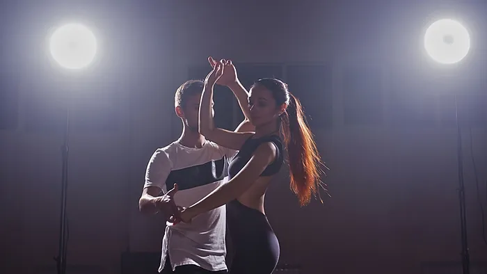

My hobbies

Coding

Dancing

My name is Yulia, and I'm a software engineer. I'm also a coffee lover, salsa dancer, and of course, a dedicated programmer (well, at least I hope so). If you are into coffee, sunsets, dogs, cycling, gym, books, or you would like to find out more about me profession-wise, or you just want to make friends, don't hesitate to scroll down :)